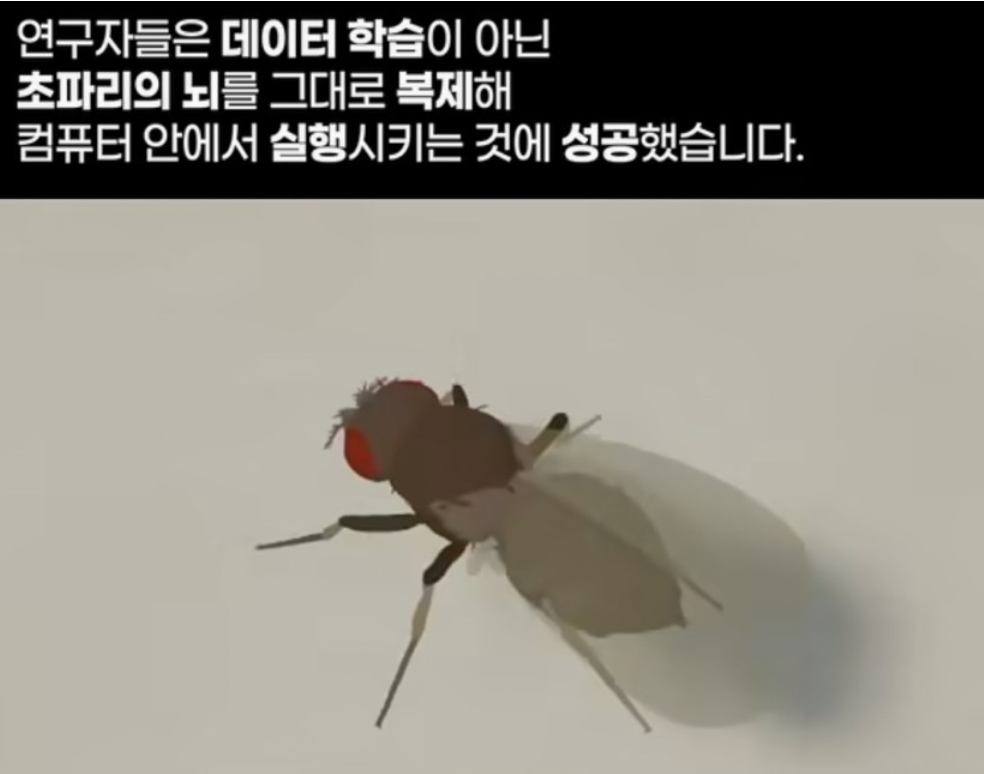
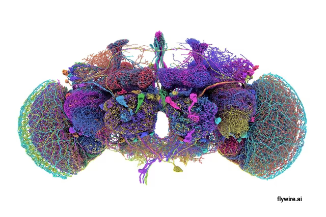
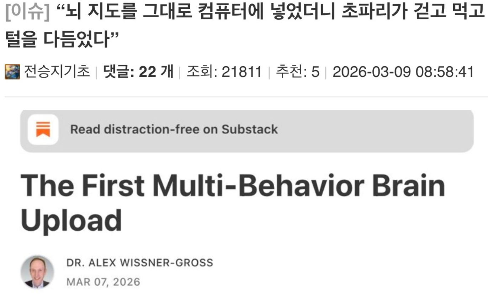

https://cafe.daum.net/subdued20club/ReHf/5788503?svc=cafeapi
https://cafe.daum.net/subdued20club/ReHf/5788367?svc=cafeapi

초파리 디지털 뇌가 완성됨

저렇게 만들어진 디지털 뇌를
가상 물리 공간에 연결시킴
다른 ai 시스템처럼
초파리의 행동을 학습시킨적도 없는데도
저 디지털 뇌를 연결하는 것 만으로도 냄새맡고 세수하고
이런 초파리 행동들이 그대로 나타났다함;;;

진짜 통속의 뇌 구현이 눈앞으로 다가옴
지금 이 가상공간속 초파리는 본인이
살아있다고 알고 있을까.....?
시뮬이든 아니든 빠져나갈 방법은 없다 열심히 살아라,,